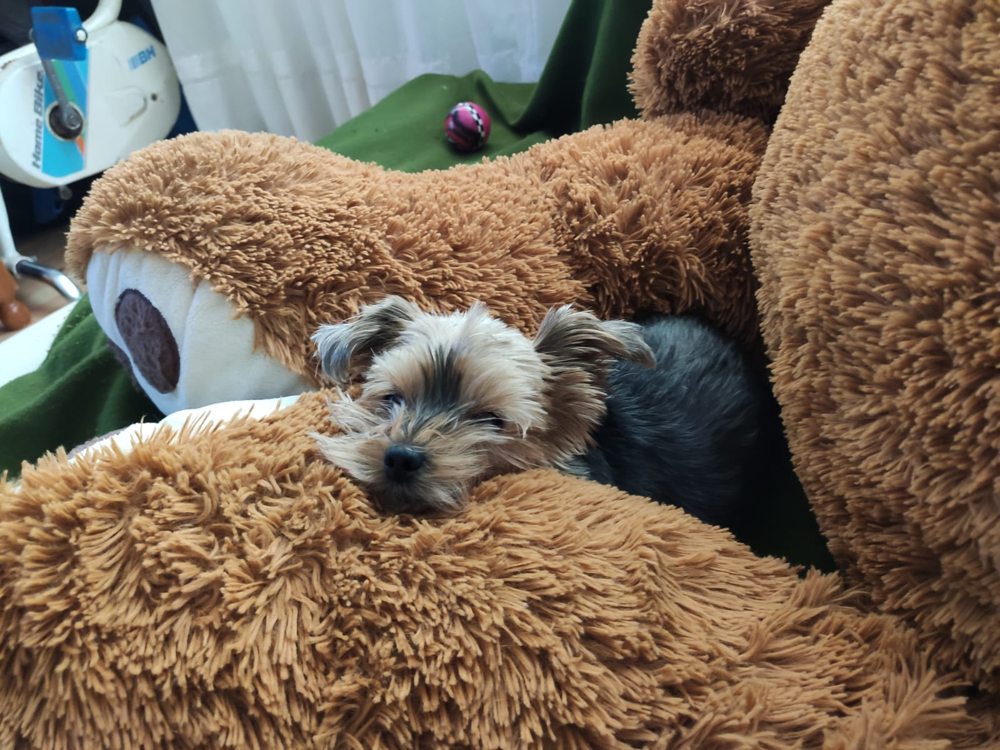
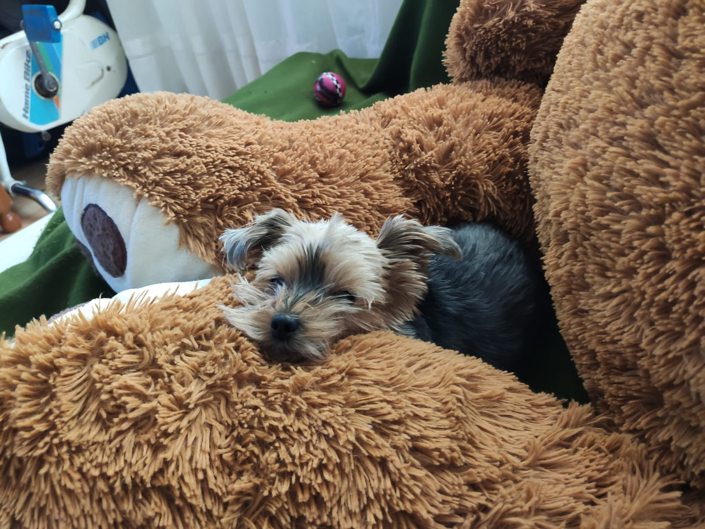

Quiénes somos
En Clínica Veterinaria Calidad Sin Frontera llevamos más de 15 años cuidando de tus mascotas con pasión, experiencia y la mejor tecnología. Somos una clínica de barrio, cercana y familiar, donde creemos que cada animal merece atención de calidad sin importar las circunstancias.
Nuestro compromiso va más allá de la medicina veterinaria: apoyamos a personas y asociaciones que dedican su tiempo a proteger a los animales de forma desinteresada, y ofrecemos ayuda a quienes no siempre pueden costear todos los cuidados.
Porque para nosotros, tu mascota es parte de tu familia… y también de la nuestra. 🐾❤️
Servicios

Consultas generales
Revisiones rutinarias y atención para detectar cualquier problema de salud a tiempo.

Cirugías
Procedimientos quirúrgicos con anestesia segura y seguimiento post-operatorio.

Urgencias 24h
Atención inmediata en casos críticos, disponible los 365 días del año.

Vacunaciones
Programas de vacunación adaptados para perros, gatos y animales exóticos.

Análisis clínicos
Laboratorio propio para diagnósticos rápidos y precisos.

Peluquería canina y felina
Servicios de estética y cuidado para que tu mascota luzca saludable y feliz.

Hospitalización
Área equipada para el cuidado y recuperación de pacientes que requieren atención continua.

Adiestramiento y comportamiento
Programas de educación y modificación de conducta para perros de todas las edades.
Nuestros centros
Visita nuestras instalaciones, diseñadas para ofrecer comodidad a nuestros pacientes y sus dueños.
Centro Moratalaz
C. de Arroyo de Fontarrón, 49, LOCAL POSTERIOR, Moratalaz, 28030 Madrid
Centro Vallecas
C. de Benjamín Palencia, 29, LOCAL LATERAL - Vallecas, Puente de Vallecas, 28038 Madrid
Centro Vicálvaro
C. de Villacarlos, 9, Local posterior, Vicálvaro, 28032 Madrid
Nuestro equipo
Conoce a los profesionales que estarán cuidando de tu mascota:
Dra. Patricia Alvarado
Veterinaria
Medicina en animales de compañía
Dra. Mónica Yshikawa
Veterinaria
Cirugía y urgencias
Dr. Pedro Vicente
Veterinario
Medicina interna
Dr. Javier Medina
Veterinario
Diagnóstico por imagen
María López
Auxiliar Veterinaria
Atención al cliente
Carlos Ramírez
Auxiliar Veterinario
Laboratorio y análisis clínicos
Ana Torres
Auxiliar Veterinaria
Peluquería y estética
Lucía Fernández
Adminsitrativo de Recepción
Gestión de citas y atención telefónica
🎉 Promociones Especiales
¡No dejes pasar estas ofertas limitadas para cuidar de tu mascota y ahorrar!
Vacunación antirrábica
Protege a tu mascota con un 20% de descuento.
Pack análisis + consulta
Todo por solo 35€.
Peluquería 2x1
Baños y cortes de pelo: ¡Llévate 2 y paga 1!
Opiniones de clientes atendidos en el servicio de urgencias
Laura Espadas
hace 3 días
⭐⭐⭐⭐⭐
Me ayudaron en una urgencia a las 2 de la madrugada. Trato rápido y muy humano. Mi gato “Mishi” ya está perfecto. ¡Gracias equipo!
María Luisa Fabelo Ramé
hace 1 semana
⭐⭐⭐⭐
Llevé a mi perrita por vómitos y en 24h ya tenía diagnóstico y tratamiento. Me explicaron todo con paciencia y sin prisas. 10/10.
Pepa San Félix
hace 5 días
⭐⭐⭐
Profesionales y claros con los precios. Agradezco que antes de hacer pruebas me dijeran opciones y costes. Volveré sin duda.
M.M. RG
ayer
⭐⭐⭐⭐⭐
Marlene fue un encanto en recepción y el Dr. Monge trató a “Rayo” como si fuera suyo. Salimos con plan de medicación y muchas recomendaciones útiles.
Óscar Montero
hace 2 semanas
⭐⭐⭐⭐
Muy buena atención en peluquería canina. El corte quedó genial y nos dieron consejos de cepillado. Tardaron un poco, pero valió la pena.
Lucía Fernández
hace 4 días
⭐⭐⭐⭐⭐
Llevé a mi conejo “Nube” por un problema dental. Se nota que saben de exóticos. Revisión completa y seguimiento por WhatsApp. Súper recomendables.
Javier Medina
hace 9 días
⭐⭐⭐⭐
Nos hicieron una ecografía y radiografías el mismo día. Equipamiento moderno y explicación clarísima de las imágenes. Confianza total.
Carolina R.
hace 6 días
⭐⭐⭐
Vacunación y revisión anual sin esperas. Me gustó que tuvieran detalles con mi perrita nerviosa (premios, mantita). Pequeño parking cerca.
Casos que nos llenan de orgullo 🐾
Historias reales de recuperación y cariño en nuestra clínica.
Bartolo
Cómo llegó: Bartolo llegó con la insulina muy alta, alcanzando niveles cercanos a 500.
Tratamiento: Se le administró insulina rápida y se inició un control de pinchazos mañana y noche.
Resultado: Ya no se marea, camina con normalidad y es un perro feliz y lleno de vida.

Max
Cómo llegó: Max tenía una infección severa en la piel que le causaba dolor y caída de pelo.
Tratamiento: Recibió medicación, baños terapéuticos y una dieta especial.
Resultado: Su pelaje volvió a brillar y recuperó su vitalidad y confianza.

Nube
Cómo llegó: Nube tenía problemas respiratorios y falta de energía.
Tratamiento: Se diagnosticó con precisión y se le aplicó un plan integral de cuidado.
Resultado: Ahora respira fuerte y juega feliz con otros conejitos.
Nuestros Pacientes Felices 🐕🐾
Cada foto cuenta una historia de amor, cuidado y recuperación.


 



Contacto
📩 Envíanos tu mensaje y te responderemos lo antes posible
Trabaja con nosotros
¿Eres veterinario o auxiliar con pasión por los animales? Envíanos tu CV y forma parte de nuestro equipo.